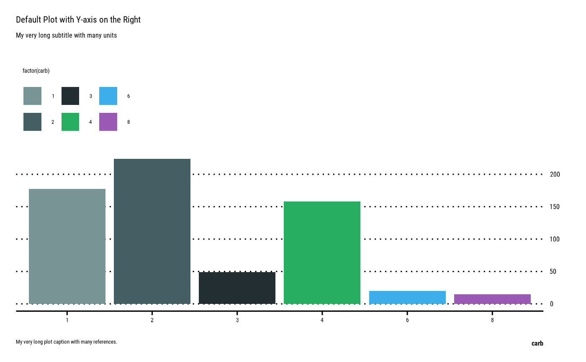
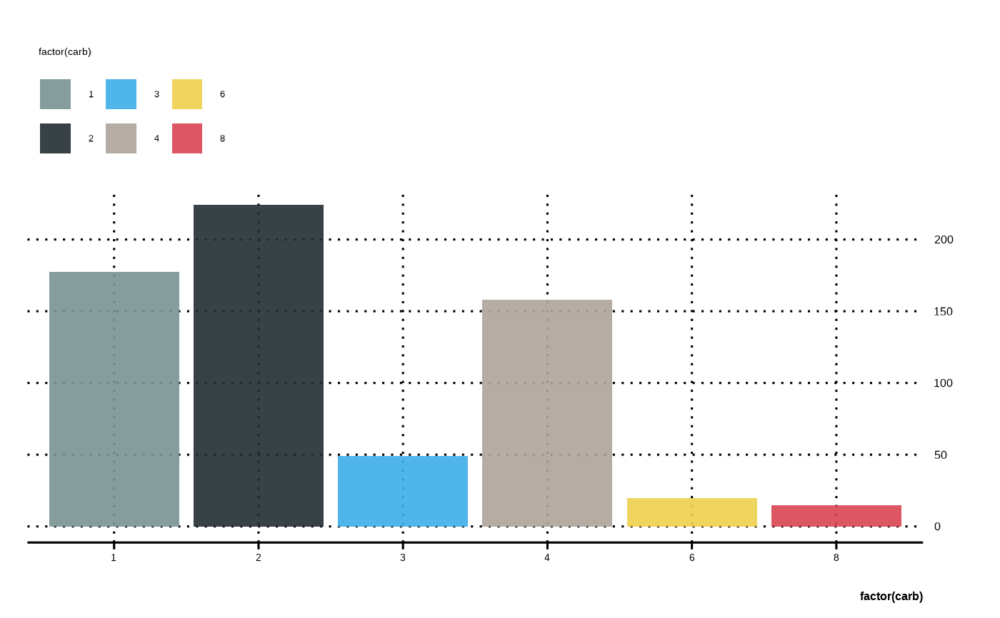
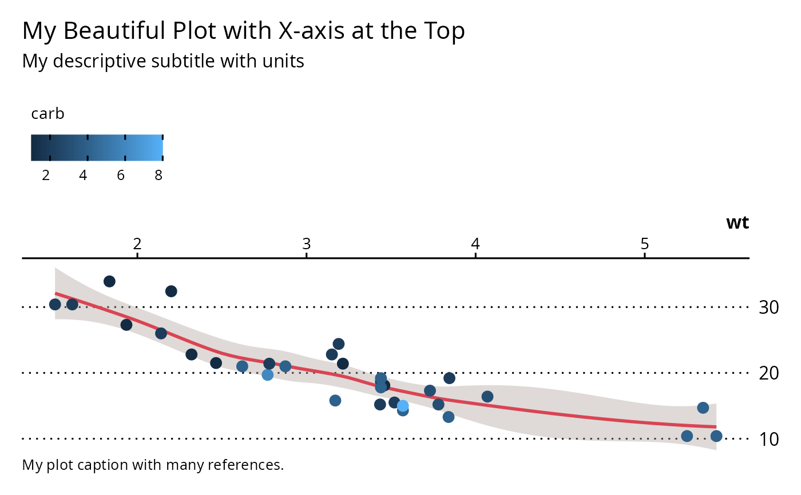
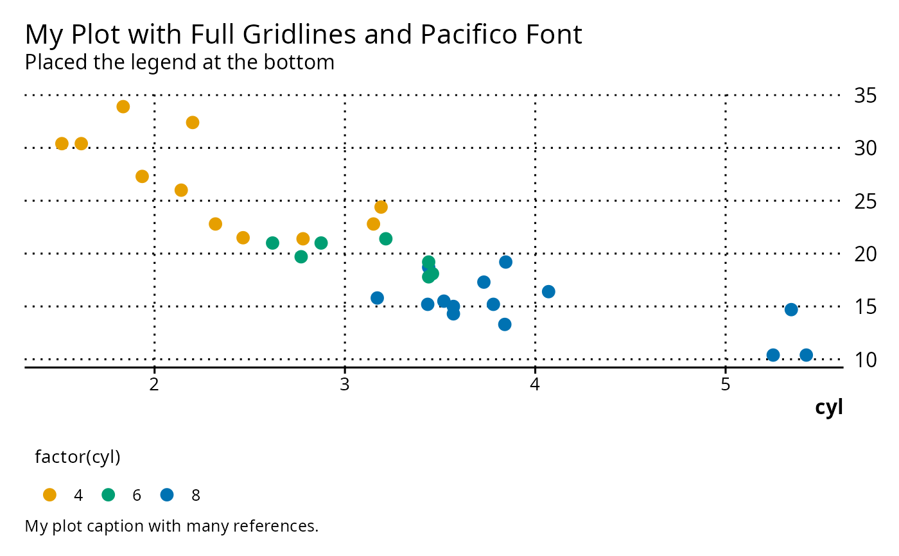

Opinionated ggplot2 with custom element sizes and color scales derived from Bootstrap branding (per _brand.yml). Behind the scenes gglabs uses theme_brand() to control colors and fonts, and has Y-axis on the right. Axis placement can be modified with argument axes.
Arguments
- data
Default dataset to use for plot. If not already a data.frame, will be converted to one by
fortify(). If not specified, must be supplied in each layer added to the plot.- mapping
Default list of aesthetic mappings to use for plot. If not specified, must be supplied in each layer added to the plot.
- axes
2-length vector to control the position of X (
bottomortop) and Y (leftorright) axes (default:c("bottom", "right"))- ...
Arguments passed on to
theme_brandbase_bgplot, panel, legend background
base_colorcolor for text and line elements
gridshow gridlines
XY,X,Y(default) ornfor no gridlinelegendshorthand for
theme(legend.position="...")(default:top)base_sizebase font size, given in pts.
base_familybase font family
Examples
require(ggplot2)
gglabs(mtcars, aes(factor(carb), mpg, fill=factor(carb))) +
geom_col() +
labs(
x = "carb",
title = "Default Plot with Y-axis on the Right",
subtitle = "My very long subtitle with many units",
caption = "My very long plot caption with many references.")
#> Error : thematic doesn't (yet) support the 'agg_record_1603830782' graphics device. Please report this error to https://github.com/rstudio/thematic/issues/new

# Equivalent to below
ggplot(mtcars, aes(factor(carb), mpg, fill=factor(carb))) +
geom_col() +
scale_brand_df() +
guides(y=guide_axis(position="right")) +
theme_brand(grid="XY")
#> Error : thematic doesn't (yet) support the 'agg_record_1603830782' graphics device. Please report this error to https://github.com/rstudio/thematic/issues/new

if (FALSE) { # \dontrun{
brand_on()
} # }
gglabs(mtcars, aes(wt, mpg, color=carb), axes="topright") +
geom_smooth(color=pal("red"), fill=pal("pink")) +
geom_point(size=3) +
labs(
title = "My Beautiful Plot with X-axis at the Top",
subtitle = "My descriptive subtitle with units",
caption = "My plot caption with many references.")
#> Error : thematic doesn't (yet) support the 'agg_record_1603830782' graphics device. Please report this error to https://github.com/rstudio/thematic/issues/new
#> `geom_smooth()` using method = 'loess' and formula = 'y ~ x'

gglabs(mtcars, aes(wt, mpg, color=factor(cyl)),
grid="XY", legend="bottom", base_family="Pacifico") +
geom_point(size=3) +
labs(
x = "cyl",
title = "My Plot with Full Gridlines and Pacifico Font",
subtitle = "Placed the legend at the bottom",
caption = "My plot caption with many references.")
#> Error : thematic doesn't (yet) support the 'agg_record_1603830782' graphics device. Please report this error to https://github.com/rstudio/thematic/issues/new
